intueative (in-tu-ee-tiv)
an intuitive app for intuitive eaters!
Most food journaling apps are built around the very things intuitive eating asks people to unlearn: calorie counting, weight tracking, and food morality. Even apps that brand themselves as "intuitive" still heavily rely on diet-culture mechanics. intueative is a concept app designed for what intuitive eaters actually need to support their process, not sabotage it.
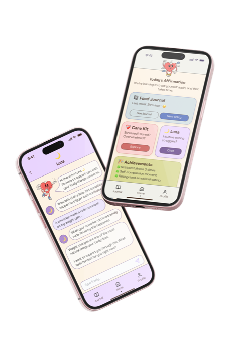
project overview✦
What is intuitive eating?
A non-diet, evidence-based approach to eating designed to help people heal and normalize their relationships with food and bodies.
The problem
Most food journaling apps were built for the opposite worldview: calorie counters, weight trackers, food labels, and streak mechanics. Even apps that brand themselves as "intuitive" still rely on these diet-culture mechanics. People practicing IE are left without a digital tool that meets them where they actually are.
The solution
intueative — a mobile app concept designed entirely around what intuitive eaters actually need: a friction-free food journal, a compassionate companion, an emotion regulation toolkit, and anti-diet achievements. Every feature is grounded in user research and behavioral science.
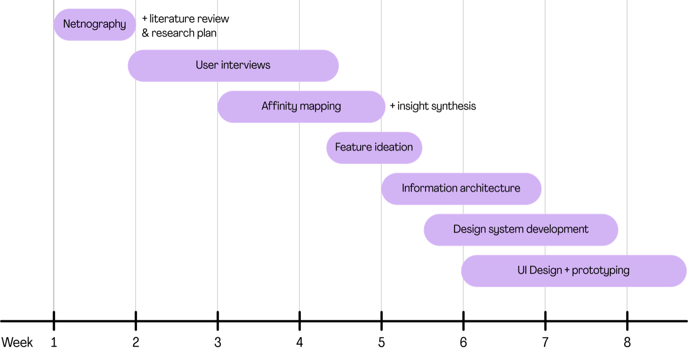
intuitive eating?✶
Intuitive eating is an evidence-based, non-diet nutrition framework developed in 1995 by registered dietitians Evelyn Tribole and Elyse Resch. It is built on 10 principles that ask people to reject diet culture, honor hunger and fullness, make peace with food, and rebuild trust with their bodies.
why this project✧
In intuitive eating, food journaling is one of the first steps toward rebuilding body awareness. People practicing IE — usually those working with a dietitian — log what they ate, when, and how it felt, in order to slowly relearn their own hunger, fullness, and satisfaction signals.
When I first started practicing IE, I struggled a lot with food journaling, but...
- Is this common among other people practicing intuitive eating?
- Do they face other problems? (💡 Spoiler: Yes!)
- What challenges do intuitive eaters face?
- What support do they need the most?
Research Question: What are the pain points in users' intuitive eating journey?
problem statement✦
I audited the meal tracking and intuitive eating apps available at the time of research. Almost all of them undermined the very principles they claimed to support. The pattern was consistent: existing apps borrow the language of intuitive eating for marketing while their mechanics reproduce diet culture. Others, while making no claim to be an IE app, directly feed into the very mindset users came to IE to unlearn.
- ❌Calorie counters → triggering
- ❌Diet apps disguised as "wellness"
- ❌Generic tracking tools → no IE-specific support
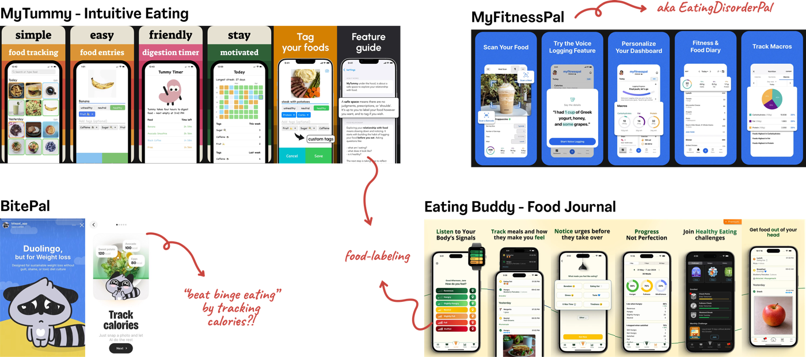
research method✦
Before doing my own research, I looked at what others had already found.
I reviewed the existing literature on intuitive eating. The studies, both qualitative and quantitative, converged on a few consistent themes: IE is associated with better psychological health and body image, but learning it is hard: people practicing IE face persistent social pressure, internalized diet culture, and difficulty trusting their own bodily cues.
Reading existing studies on IE let me refine the interview guide around documented friction points, and helped me hold my own intuitive eating practice at arm's length while I listened to others.
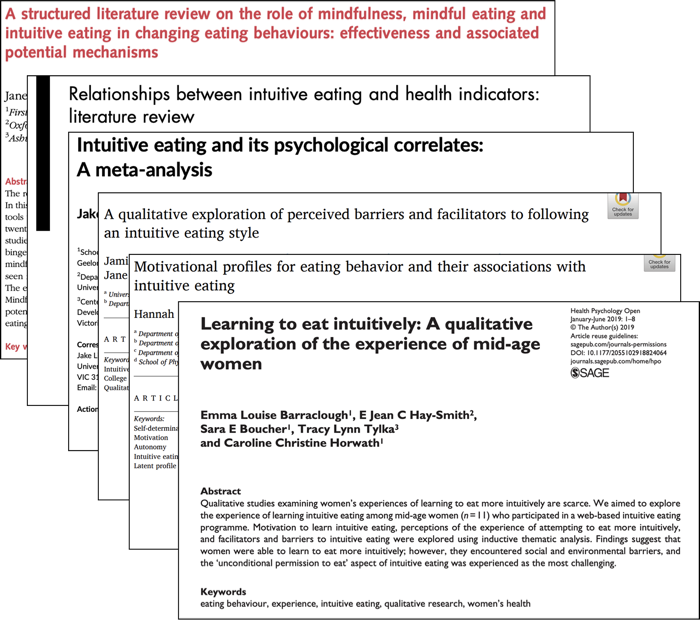
I spent time observing intuitive eating communities online: Reddit threads, blog comment sections, and social media spaces where people practicing IE share their day-to-day struggles.
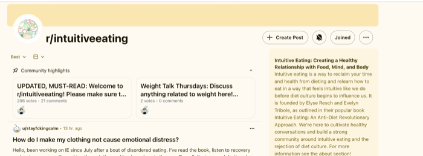
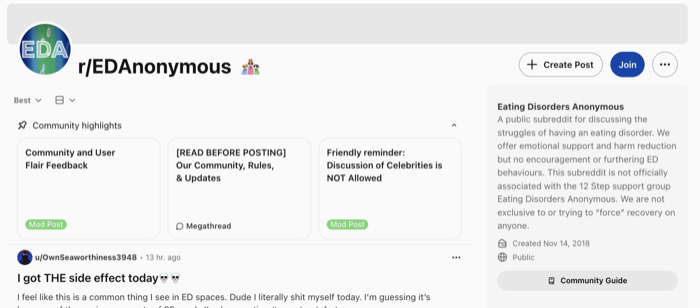
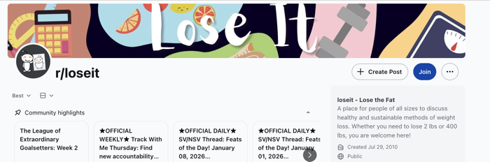
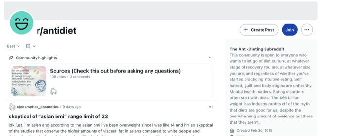
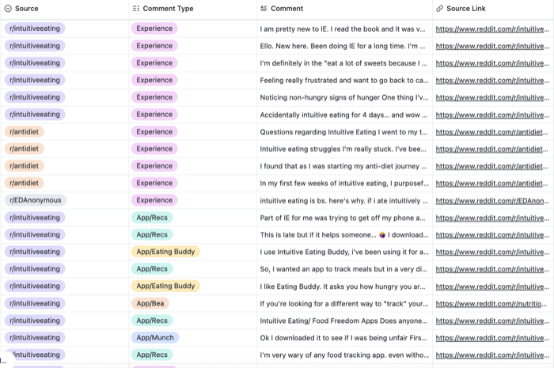
Diet culture vocabulary kept reappearing. So did expressions of guilt, shame, and relief at finding a non-diet framework. These patterns informed the thematic foundation of my interview guide.
Both the netnography findings and the existing literature shaped the interview guide consisting of 33 questions, organized into (tentative) thematic blocs:
- Warm-up: How they discovered IE, their motivation, and where they felt they were in their journey
- Before & after: How they made eating decisions before IE, and how they adapted
- Hunger & fullness: How they experience physical cues, and whether they confuse physical with emotional hunger
- Challenges: What makes IE hard to sustain, and what they wished existed to make it easier
- Diet culture, body image & relationship with food: Past dieting history, lingering diet behaviors, and how negative body image days affect their IE process
- Attitudes toward apps: How (and whether) they track meals, how tracking makes them feel, and what an ideal supportive tool would look like
I conducted 7 in-depth, semi-structured interviews (online, ~45–60m) with women actively practicing intuitive eating alongside a registered IE dietitian. Participants were recruited through a partnering IE dietitian, who shared the study with clients who had been practicing IE for at least two months. Each participant gave verbal informed consent before the interview began, including consent to be recorded for analysis purposes.
analysis✶
I analyzed the interviews through a structured, bottom-up process. The analysis moved through three stages:
raw data
I went through every transcript and pulled out individual statements: specific thoughts, feelings, and experiences in participants' own words.
coding
I tagged each statement with a first-level label by type: 🟡 Behavior, 🔴 Pain Point, 🟢 Win/Success, 🔵 Context, or 🟣 Emotion. This color-coded system made it possible to see, at a glance, where the struggles clustered and where the wins lived.
themes
I grouped related codes until patterns surfaced. 7 themes emerged.
Body acceptance has grown, but negative-body-image days still derail the IE process.
Old extremes have lessened, but stress and dissatisfaction can re-trigger them.
They know it helps, but find it hard to sustain without it feeling like surveillance.
They can read their bodies now, but trusting and acting on those signals isn't automatic.
Loved ones don't understand IE, and their skepticism becomes a quiet pressure.
Remnants of diet culture pull them back, even when they're committed.
Emotional eating hasn't disappeared; it's become more conscious.
These clusters then consolidated into the 5 core insights that shaped the entire product.
"I'd been out of touch with my body for so long that coming back together — or maybe meeting for the first time — was really hard."
"[...] It makes me doubt my whole process. I feel unheard. Everyone being a part of diet culture pulls me back into it sometimes too."
"I used to think food was just fuel for exercise. Now I can read it as a source of pleasure too."
"Before intuitive eating, I was either on a diet or I wasn't — and when I wasn't, I ate until I couldn't anymore."
"I still have negative body image days, but now I can also look at my body from a neutral place."
"The food journal is the place where intuitive eating became most integrated into my life."
"Emotional eating has been the story of my life. I always felt guilty. But now, when I eat emotionally, I know I'm doing it — and I do it anyway."
insights & implications✧
Help users reconnect with hunger/fullness signals through education, celebration, and permission tools.
Make tracking effortless, shame-free, and visually distinct from diet apps.
Normalize food as a valid coping tool while expanding emotion regulation options.
Provide warm, non-judgmental support in vulnerable moments to build self-compassion.
Combat the internal "diet police" with a compassionate counter-voice and evidence-based reassurance.
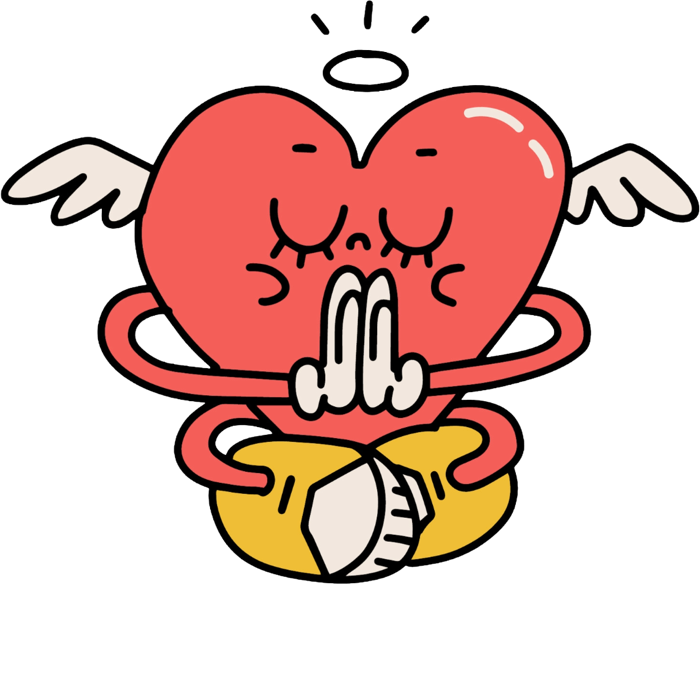
These insights translated into concrete features by asking "How Might We" questions that turned each finding into a design opportunity.
color palette✦
Most diet and wellness apps lean on either clinical whites and blues, or aggressive brights designed to "motivate." Both undermine the intuitive eating experience — one feels sterile, the other punitive. I decided on a palette that sits between them:
Warm off-whites and deep brown. Used for backgrounds, surfaces, and primary text. The base is warm, never clinical.
Four muted pastels that carry the emotional tone of the system. Soft & non-overwhelming.
Darker, saturated versions of each pastel.
the solution✦
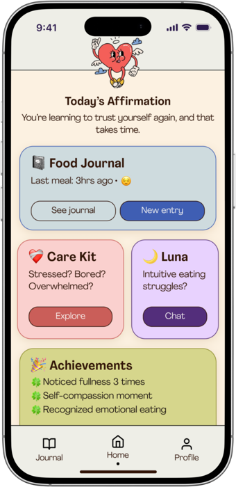
intueative!
Homepage
A bento-style dashboard with all features visible at a glance. Luna sits at the top and stays visible across the app.
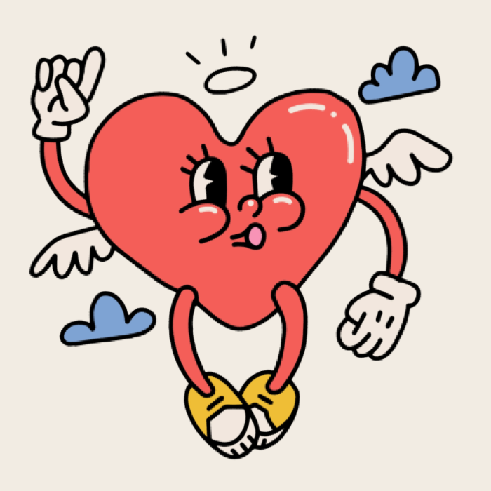
our mascot Luna!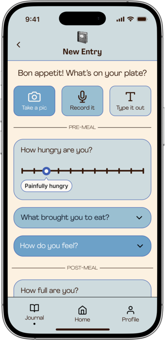
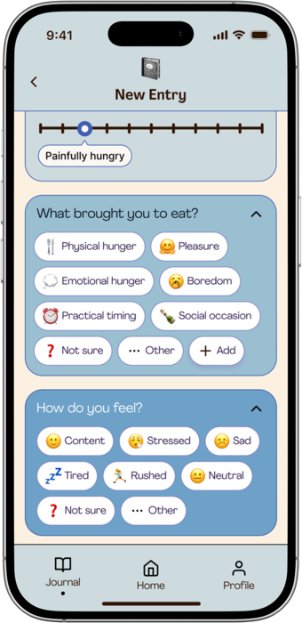
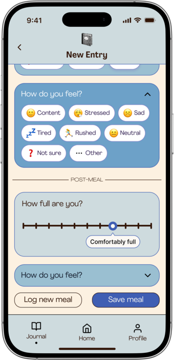
Food Journal - New Entry
The awareness of journaling, without the weight of it.
Users log meals in whichever form feels lightest — a photo, a voice note, or a quick text — capturing hunger and fullness on the 1–10 scale IE dietitians actually use. Research kept surfacing the same tension: journaling is one of the most valuable IE practices, yet the one people abandon fastest. The problem was never the practice, it was the tools — so this flow keeps only what supports awareness.
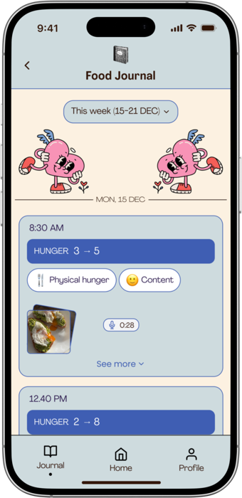
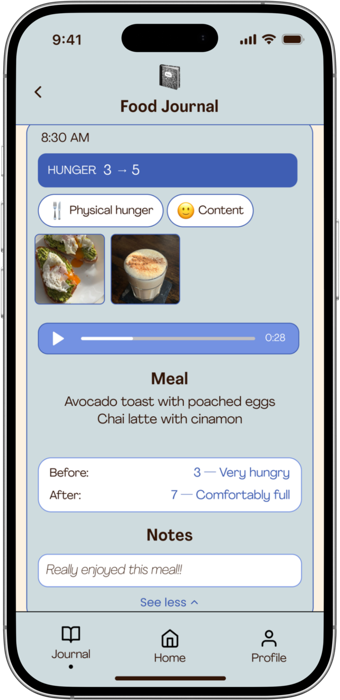
Food Journal
A record you can look back at, not one that looks back at you.
Past entries are collapsed by default and organized by week. Users can tap any day to expand it and see the photo, hear the voice note, or read what was written. Research showed that most food journaling tools eventually feel like surveillance, so this weekly view was designed as neutral space you can revisit on your own terms.
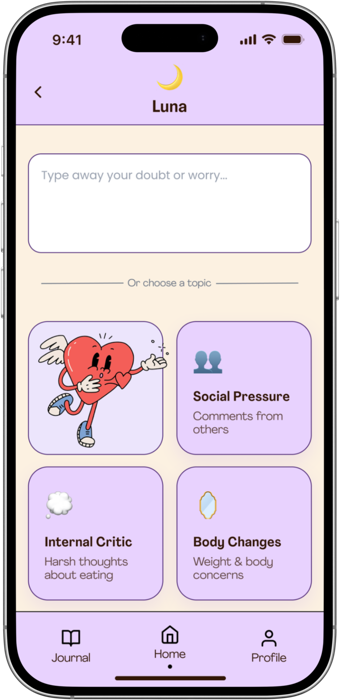
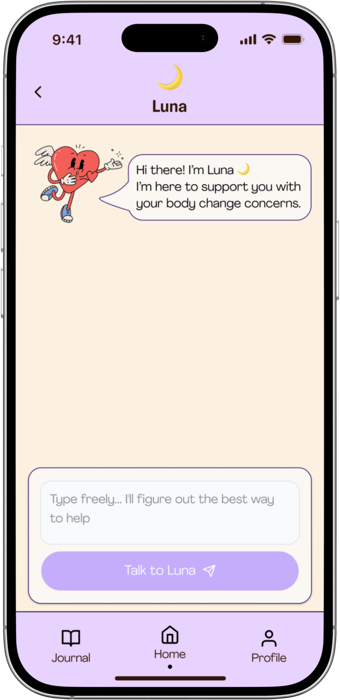
Compassionate Companion - Luna!
A warm, compassionate companion for when things get hard.
Luna is an AI companion for the moments doubt, guilt, or a hard meal shows up and there's no one to reach out to. Users can type freely, or start from a guided entry point drawn from research. The strongest interview finding was the most human: what helped most was a compassionate witness, modeled on how IE dietitians actually speak. Luna makes that voice available without pretending to replace the relationship it grew from.
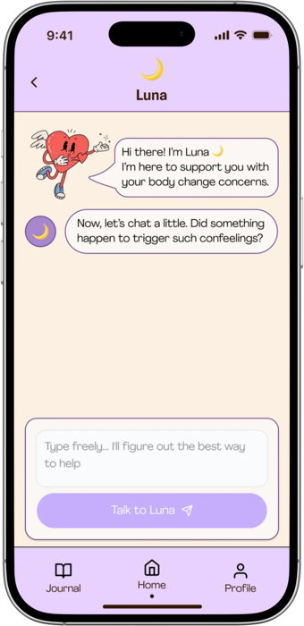
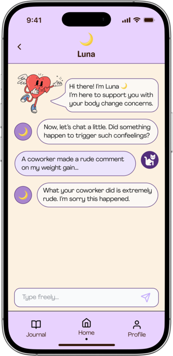
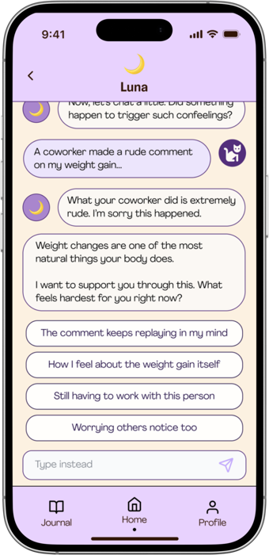
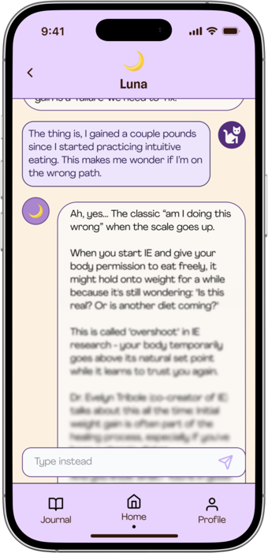
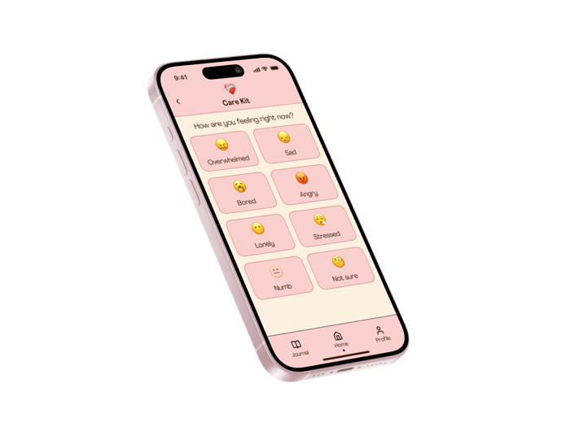
Care Kit
Eating to soothe is valid. So is choosing something else.
Care Kit is a small in-app space for the moments users reach for food not out of hunger, but out of something else. It opens with permission — eating to soothe is a legitimate way to cope — then offers a few gentle alternatives to explore: a grounding exercise, a short breath, a walk, a message to someone. Research showed two groups hiding in the same theme, some already at peace with emotional eating, others still trapped in guilt — so Care Kit validates the impulse first, offers alternatives second, and never judges.
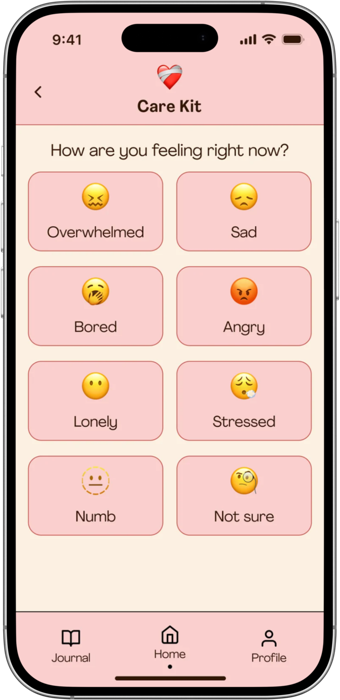
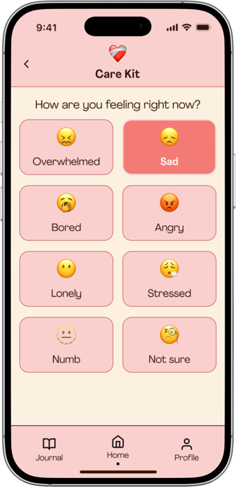
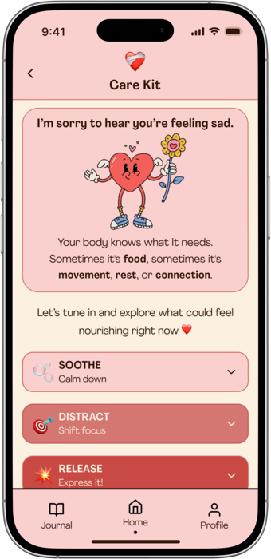
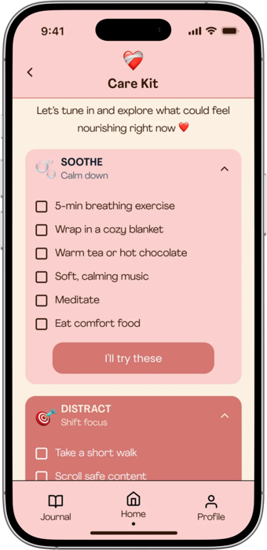
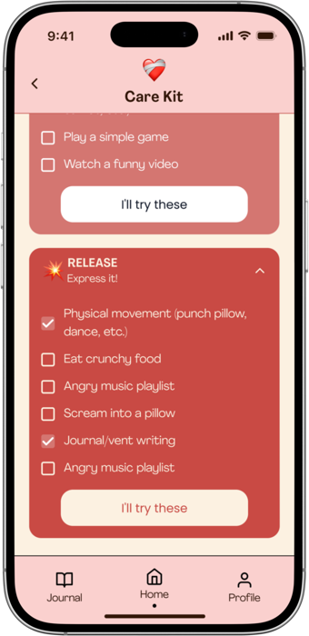
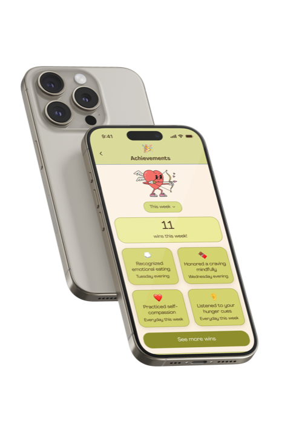
Achievements
Progress that a scale would never catch.
Achievements logs the wins intuitive eating actually produces: noticing fullness for the first time in years, a self-compassion moment after a hard meal, recognizing emotional eating without spiraling, asking for what you want on a menu. Most progress in IE is invisible by diet culture's standards: no weight to celebrate, no streak to protect, no before-and-after. Users forget how far they've come, and that forgetting is exactly what diet culture exploits; so Achievements makes the invisible visible, on the user's own terms.
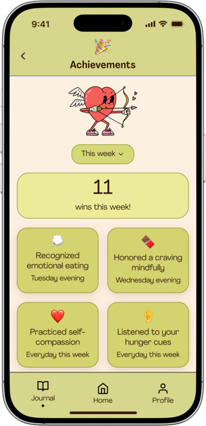
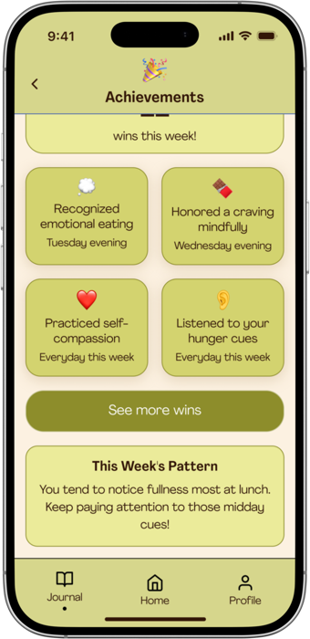
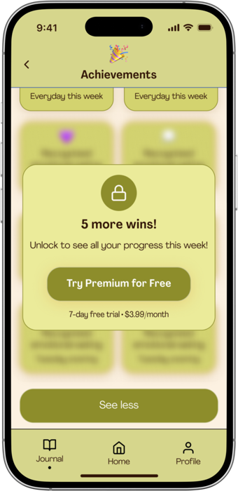
reflections✦
What I'd do differently
I didn't run usability tests with the final designs. Given the timeline of the project, testing was deprioritized. If I did this again, I would bring at least two or three of the original interview participants back to test the food journal flow specifically. That's the feature that is most emotionally loaded, and the most vulnerable to subtle wording mistakes.
I'd also revisit Luna. Designing an AI companion in a space adjacent to mental health carries real risk, and looking back, I'd want to explore a different direction: replacing Luna with an IE community tab — a space where practitioners could support each other directly. The "compassionate witness" doesn't have to be artificial. In fact, it might be more powerful when it isn't. A community-led model would also address another finding from research: the isolation users feel when the people around them don't understand IE. One feature, two insights served!
What this project taught me
Coming from a Social Psychology background, I'm used to studying behavior. This project taught me that designing for behavior change asks for the same rigor, and something more that data alone can't supply: Empathy, restraint, and a willingness to leave things out.

contact ✦
If you have any thoughts on my project or would like to collaborate, let's chat!